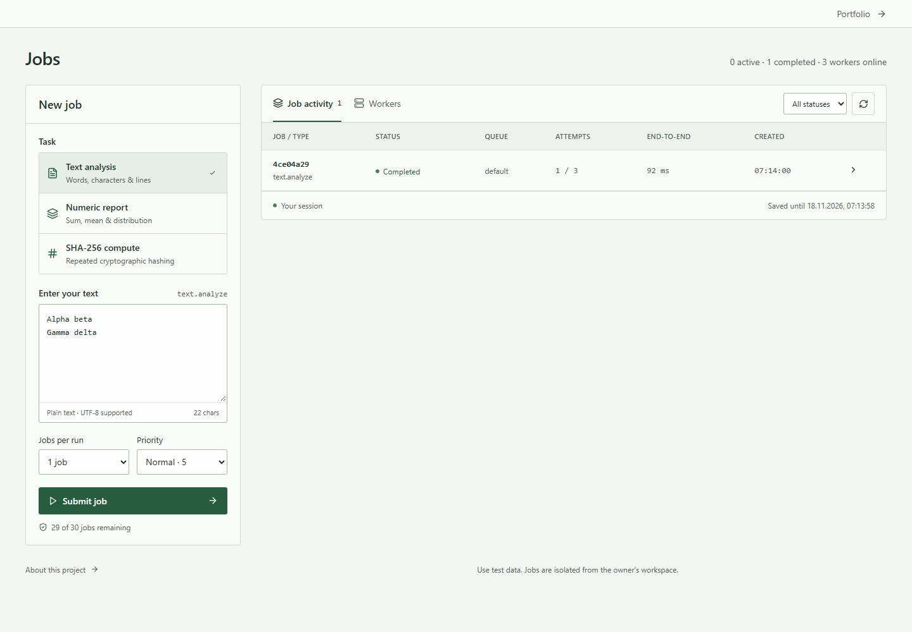

← Projects and work
TaskMesh
A durable job queue in Rust and PostgreSQL.
I built a Rust/Axum API, PostgreSQL queue, workers and React console, deployed with Docker on my Raspberry Pi 5.

Implementation
- Transactional claims with FOR UPDATE SKIP LOCKED, submission idempotency and durable job/result storage.
- Renewable leases, claim tokens, failure recovery and retries with backoff; dead-letter after exhausted attempts.
- Three handlers: text, numeric reports and SHA-256. Batches of 1/5/10 jobs, priorities and attempt history.
Verification
PostgreSQL tests cover concurrent claims, expired leases and session isolation. The public demo exercises submission, results and execution history.
Limitations
Execution is at least once: a handler may run again, so external side effects need their own idempotency. Session limit: 30 jobs / 24 hours. One server does not provide high availability.